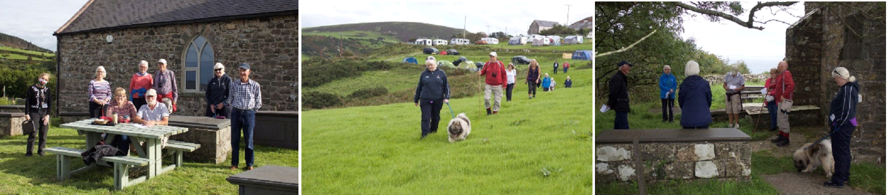

Background

Work is ongoing on the chapel. All we need now is better weather !!
We have received more money from CADW to refurbish the interior ceiling and get the plasterwork back to it's original state
Geraint Jones gave a talk on "The Smallest Man in the World" in October, and Bob Morris gave a talk on "The Legends of Arthur" in November. In the new year we will be having talks on the third Wednesday of the month.
At long last the works on Capel MC Llithfaen is underway! We signed the lease on the building in February of this year, but this difficult period descended upon us, and despite securing the monies, the work came to an abrupt halt, almost before it began.

By now, however, the work is underway again, and these initial grants are being used to pay for the work of securing the roof and strengthening the ceiling. We thank “AONB Llŷn’s Sustainable Development Fund”, The Garfield Weston Foundation, The Welsh Church Fund, CADW and The Lottery Heritage Fund for their support during this stage.


Our eventual aims for the building is to create two floors within the main building, the open upper floor, keeping the gallery and choir stalls’ unique features; the lower floor will be developed into a small café and a heritage centre, focusing on local history and Tre’r Ceiri.
Of course, due to the present restrictions, we were unable to make a start the heritage activities we had planned, but we had various Zoom during the lockdown months. It is our intention to resume the monthly meetings once the situation allows us to hold face to face meetings inside.
We held our annual pilgrimage on Sunday, 30 August. We walked from the church in Pistyll to the church in Nefyn, and we thank Ann Roberts for making the arrangements and for the warm welcome at the maritime museum.
It is a challenging period for every organisation, and because we can’t host activities, and the bills keep rolling in, we have set up a Just Giving page. If you’d like to make a contribution towards our venture, we would be extremely grateful.
We are in the process of designing a website and, by now, we have social media pages:- give the Hafod Ceiri page a like on Facebook and follow @HafodCeiri on Twitter.
Os hoffech fod ar restr ein cyfeillion - a fyddai'n bosib i chi anfon eich manylion cysylltu cywir i Cyfeillion.HC@hotmail.com